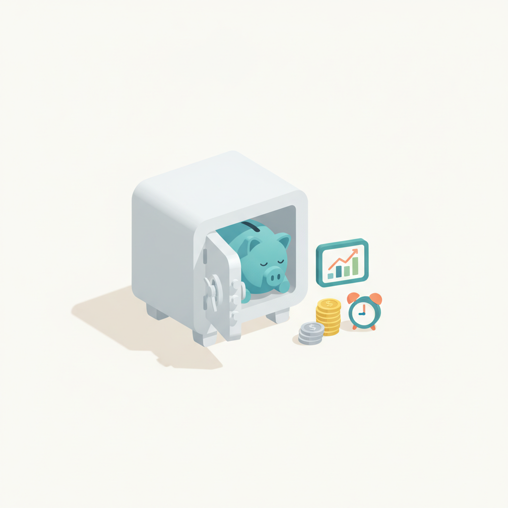
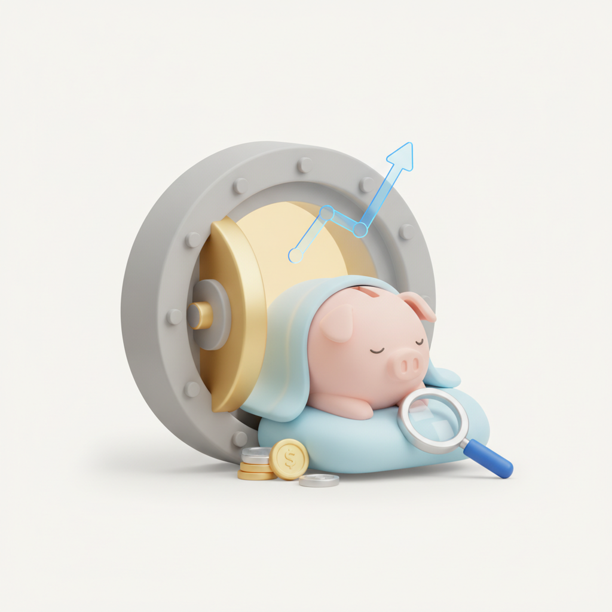
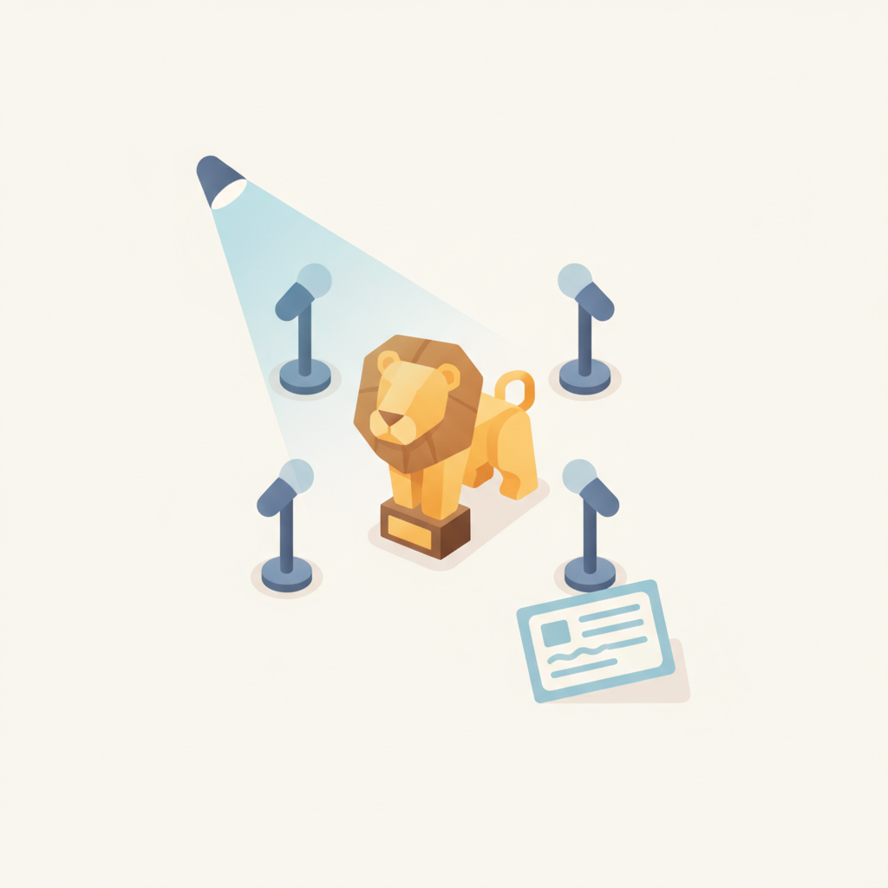
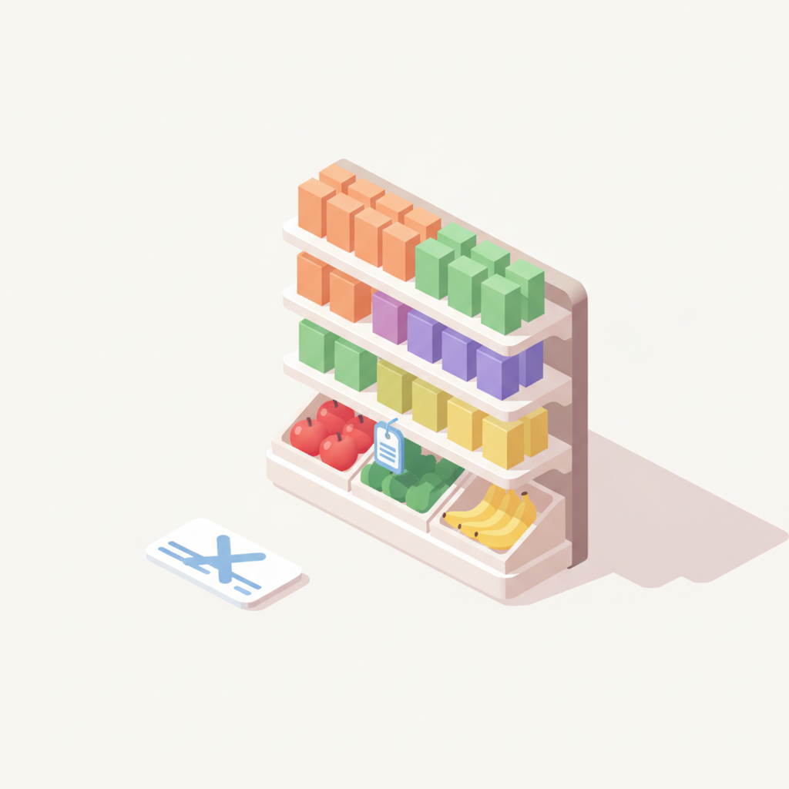
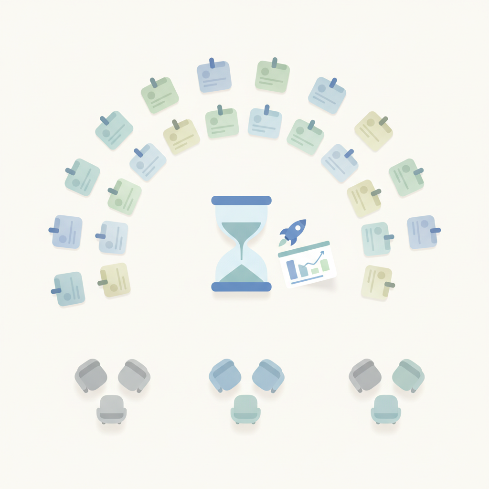
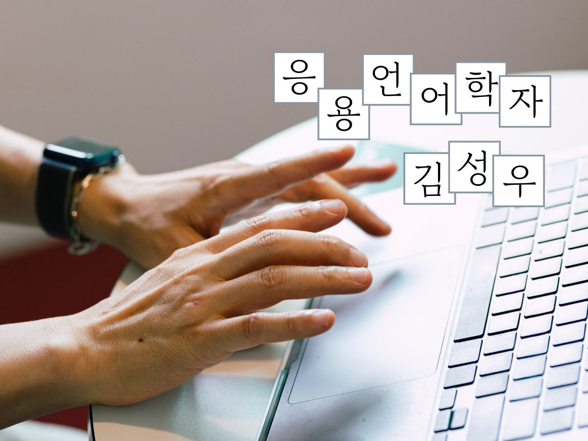

안녕하세요! 월요일 마케팅 소식 전해드립니다 😊 오늘은 롱블랙 아티클이 특히 눈길을 끕니다. AI가 글을 대신 써주는 시대에 '나의 언어'를 지키는 것이 왜 중요한가를 다루는 내용인데요, 2배속 영상과 20분 요약본에 익숙해질수록 우리가 직접 읽고 쓰는 시간은 줄어들고, 그 자리를 AI가 채워갑니다. 마케터에게 '나만의 언어'는 브랜드 목소리와 직결되는 역량인 만큼, 오늘 아티클은 꼭 한 번 읽어보시길 권합니다.
마케팅 업계 소식에서는 트레이더 조의 사례가 흥미롭습니다. 멤버십·리워드 프로그램이 유통업계의 기본 공식이 된 지금, 트레이더 조는 그 공식을 따르지 않고도 높은 고객 충성도를 유지하고 있습니다. "충성도는 프로그램이 아니라 전략에서 나온다"는 메시지는, 포인트와 쿠폰으로 고객을 묶어두는 방식과 브랜드 자체로 고객을 끌어당기는 방식의 차이를 다시 생각하게 합니다. 키움증권이 유해진을 내세워 방치된 퇴직연금 문제를 유머로 풀어낸 캠페인도 함께 챙겨보시길 추천합니다. 무거운 금융 주제를 친근하게 해석한 크리에이티브 방향이 인상적입니다.
한 주를 힘차게 시작하시고, 오늘 소식들이 실무에 좋은 자극이 되길 바랍니다! 🚀
에스엠컬처앤콘텐츠(SM C&C) 엔터사업부문 신임 대표로 최영인 전 SBS 예능본부장이 선임됐다.3일 SM C&C에 따르면 최영인 엔터사업부문 대표는 서울대학교 동양사학과 출신으로, EBS와 SBS를 거치며 36년간 콘텐츠 기획과 제작, 조직 운영을 이끌어왔다. SBS 예능본부장을 역임했고, 이후 스튜디오프리즘 제작사업부문 대표 등을 맡아 콘텐츠 제작과 사업 다각화를 총괄해 온 베테랑이다.대표작으로는 '야심만만', '힐링캠프', '판타스틱 듀오', '미운 우리 새끼' 등이 있
›
2HSAD가 배우 유해진과 함께한 키움증권의 퇴직연금 신규 광고 캠페인을 공개했다. 3일 HSAD에 따르면 이번 캠페인은 퇴직연금을 단순히 쌓아두는 자금이 아니라, 노후를 위해 적극적으로 관리하고 운용해야 하는 투자 자산으로 새롭게 인식시키는 데 초점을 뒀다. 지난 5월 HSAD는 유해진을 앞세워 '설명할 시간 없어, 1위로 타' 캠페인을 통해 '투자하면 키움'이라는 브랜드 리더십을 직관적으로 전달한 바 있다. 이번에는 앞선 캠페인에서 형성한 신뢰를 퇴직연금으로 확장해 주식 투자뿐 아니라 퇴직연금 운용에서
›
3[ 매드타임스 채성숙 기자] HSAD(대표이사 박애리)가 배우 유해진과 함께한 키움증권의 퇴직연금 신규 광고 캠페인을 공개해 큰 관심을 얻고 있다. 이번 캠페인은 퇴직연금을 단순히 쌓아두는 자금이 아니라, 노후를 위해 적극적으로 관리하고 운용해야 하는 투자 자산으로 새롭게 인식시키는 데 초점을 뒀다.지난 5월 HSAD는 유해진을 앞세워 ‘설명할 시간 없어, 1위로 타’ 캠페인을 통해 ‘투자하면 키움’이라는 브랜드 리더십을 직관적으로 전달했다. 이번에는 앞선 캠페인에서 형성한 신뢰를 퇴직연금으로 확장해 주식 투자뿐 아니라 퇴직연금 운
›
4칸라이언즈서울이 오는 9월 16일부터 18일까지 열리는 '칸라이언즈서울 2026'의 1차 연사 라인업을 공개했다.3일 칸라이언즈서울에 따르면 2026 칸라이언즈서울(이하 칸라서)에서는 올해 칸라이언즈 수상자와 심사위원은 물론 국내 주요 크리에이티브 리더들이 한자리에 모여 칸에서 포착한 글로벌 크리에이티비티의 흐름부터 국내에서 이를 어떻게 해석하고 실행할 것인지 다양한 관점의 이야기를 펼칠 예정이다.먼저 글로벌 연사로 지난해부터 글로벌 광고제를 휩쓸고 있는 'Vaseline Verified' 캠페인을 총괄
›
5[ 매드타임스 최영호 기자] 멤버십과 리워드 프로그램은 이제 유통업계의 기본 전략이 됐다. 식료품점은 물론 외식과 패션, 호텔까지 앞다퉈 회원 혜택을 강화하며 고객을 붙잡기 위한 경쟁을 벌이고 있다. 하지만 미국 트레이더 조(Trader Joe's)는 이런 흐름과 거리를 둔다. 별도의 멤버십이나 포인트 적립 제도 없이도 미국 식료품업계에서 가장 높은 고객 충성도를 유지하고 있기 때문이다.트레이더 조의 사례는 고객 충성도가 반드시 멤버십 프로그램에서 시작되는 것은 아니라는 점을 보여준다. 고객이 브랜드를 다시 찾는 이유는 포인트나 할
› 6AI가 참 많은 것을 바꿔놓고 있는 요즘입니다. 카피도 그럴싸하게 써주고 비주얼도 뚝딱 만들어내는 모습을 보고 있으면, ‘우리가 하던 일의 본질은 뭘까’ 문득 생각이 깊어지곤 합니다.그러던 중에 ‘인생 광고’ 이야기를 써달라는 제안을 받았습니다. 어떤 이야기를 풀어낼까 고민하다가, 광고인을 꿈꾸던 시절 좋아서 보고 또 보았던 캠페인 하나를 떠올렸습니다.바로 SK텔레콤의 [사람을 향합니다] 캠페인입니다. (지면 관계상 2편만 소개합니다.)기술 안에는 사람이 있습니다.기술은 언제나 사람에게 지고 맙니다.AI를 논하는 지금 이 시점에 이
›
710대 창업자부터 20대 후반 창업자까지 29세 이하 창업자와 예비창업자가 한자리에 모였다. 사전 신청한 19명이 각자 1분 안에 사업을 소개하고, 참가자들은 그룹을 바꿔 가며 대화를 나눴다. 스타트업 액셀러레이터 프라이머가 7월 31일 서울 강남구 센터필드 EAST 아마존웹서비스 코리아 오피스에서 29세 이하 창업자 커뮤니티 ‘U29 파운더스 클럽(U29 Founders Club)’ 7월 밋업을 열었다. 이날 200여 명이 참가했다. U29 파운더스 ... 더 읽기
›
여러분은 유튜브 영상을 몇 배속으로 보시나요. 고백하자면 저는 2배속으로 보는 데 익숙해졌습니다. 3시간짜리 영화를 20분으로 요약한 영상도 밥친구처럼 즐겨 보고요.이 습관은 영상에서만 끝나지 않더군요.
아티클 읽기 →브랜드 진단부터 지금 당장 해야 할 우선순위까지,
30분 무료 상담에서 함께 정리해드려요.
이미 수십 개 브랜드가 상담받았습니다.
내 브랜드처럼, 함께 고민하는 팀원의 마음으로 봅니다.
스타트업 대표·마케팅 담당자를 위한 30분